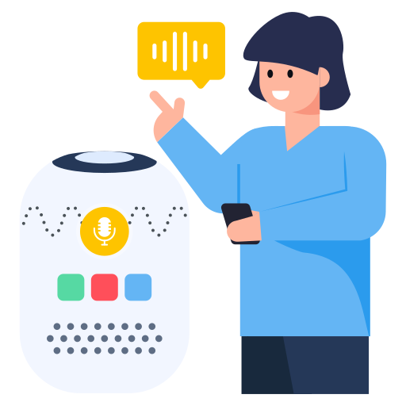

Hands-free Mouse Tracking
Advanced eye-tracking technology for hands-free cursor control and seamless interaction.

Intelligent Screen Reader
Comprehensive screen reading technology to assist visually impaired individuals with navigation and understanding.

Image and Document analyser
An AI tool that extracts and interprets visual content, making images and documents accessible to visually impaired individuals.